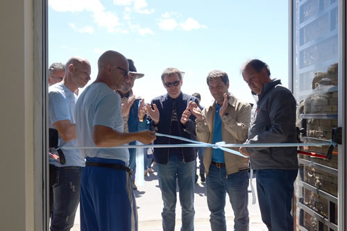
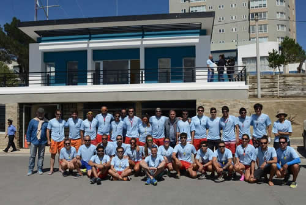

Real Chubut - Agencia de Noticias


Comodoro ya cuenta con su edificio para el Servicio de Guardavidas

En un emotivo acto, el intendente Carlos Linares junto a su gabinete, dejó inaugurado en la Costanera local, la sede central del Servicio de Guardavidas de Comodoro Rivadavia; un edificio que cuenta con vestuarios y equipamiento moderno acorde a las tareas que brindan los rescatistas en la época estival. “Con esta nueva infraestructura queremos revalorizar el rol fundamental que cumplen nuestros bañeros durante el verano para resguardar la vida de los comodorenses y turistas que concurren a nuestras costas”, dijo el jefe comunal.
Bajo la premisa de poner a Comodoro de cara al mar, este sábado al mediodía, el intendente Linares acompañado por el viceintendente Juan Pablo Luque, integrantes del gabinete municipal, los concejales Guillermo Almirón y Maximiliano Sampaoli; y público en general, presidió la ceremonia inaugural del nuevo edificio para los guardavidas de la ciudad, el cual lleva el nombre del actual jefe del Servicio, “Roberto Grupallo”, en homenaje a su dedicación y experiencia.
En ese contexto, el jefe de la ciudad brindó unas palabras al equipo de trabajo presente, manifestando que “quiero hacer público mi agradecimiento hacia nuestros bañeros por la importante tarea que realizan durante el verano que, para nosotros, es fundamental porque resguardan la vida de los comodorenses y turistas que concurren a nuestras costas”.

“Cuando uno ve este tipo de infraestructura en Comodoro, recuerda que parecía un sueño imposible hace muchos años atrás pero hoy lo logramos. Esto nos permitirá optimizar el servicio que se brinda a la comunidad y también, poner en valor la función de los guardavidas que hoy cuentan con una sede única en la Patagonia”, subrayó.
De esa manera, Linares ratificó la firme decisión de seguir apostando a las políticas deportivas, señalando que “todo este equipo de trabajo de la gestión piensa en un mismo Comodoro, con playas cuidadas, espacios públicos para nuestra gente; esto es lo que nos permite proyectar a futuro la ciudad que todos queremos. Tenemos mucho por hacer todavía en los años venideros y esperamos seguir contando con el apoyo de nuestra gente”
Jerarquización del Servicio
Por su parte, Othar Macharashvili, presidente de Comodoro Deportes, expresó que “hoy estamos reconociendo a un servicio y a quien lo conduce con una construcción que está emplazada en un lugar histórico para la ciudad, como lo es la Costanera local; revalorizando este espacio público y la labor que llevan adelante los guardavidas de la ciudad”.
“Desde hace cuatro años que comenzó a generarse un cambio político, urbanístico y social para que los comodorenses puedan tener la infraestructura que se merecen y disfrutar de sus costas. Esta obra es uno de esos logros que se dieron por decisiones políticas que se implementan para el beneficio de todos y que es un ejemplo para la Patagonia. Vamos a seguir generando estos espacios para jerarquizar a los servidores públicos”, aseguró.
Grupallo: “Estamos agradecidos con el estado por la confianza y el reconocimiento a nuestra vocación”
Con esas palabras, el Jefe del Servicio de Guardavidas, Roberto Grupallo, hizo un agradecimiento especial a las autoridades municipales por la inauguración del Edificio Central de Guardavidas en la Costanera, que lleva su nombre en homenaje a la labor y dedicación durante la temporada estival. “La Municipalidad siempre nos ha reconocido y respetado y estamos agradecidos porque con estas obras se sigue jerarquizando al servicio”, dijo.
En esa línea, Grupallo reconoció que “el edificio tiene mi nombre pero, en realidad, debiera tener muchos más porque para que esto suceda hubo mucha gente detrás y lo considero como un reconocimiento al trabajo en equipo de todos los profesionales que componen el servicio”.
En cuanto a la temporada estival 2016-2017, precisó que “contamos con 39 guardavidas para este verano, que estarán distribuidos en las playas habilitadas como lo son, la Costanera; Km 3; Km 4 y ahora se suma la primera experiencia en la costa de Caleta Córdova, donde pondremos a disposición 8 rescatistas, con una embarcación, camioneta 4x4. No obstante, habrá un vehiculo recorriendo la zona sur, pasando por Rada Tilly, playa Bonita y los Limites, durante los fines de semana y días de alta temperatura”.
Por último, señaló que “esperamos iniciar una temporada donde no tengamos víctimas fatales y si salimos a alguna emergencia, podamos estar a la altura, con la capacidad de llegar lo antes posible para que siempre la persona salga con vida. Este es nuestro objetivo principal hasta el 31 de marzo”.
PUBLICIDAD